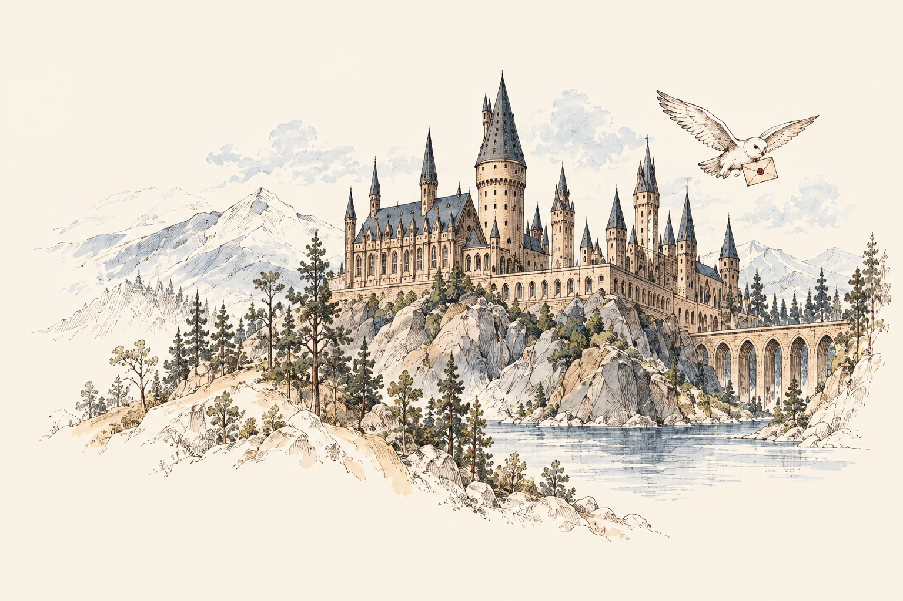

魔法社會
故事從英國展開。巫師與女巫生活在一般人——「麻瓜」——不知情的魔法社會中。斜角巷、魔法部與九又四分之三月台，讓熟悉的日常出現另一個入口。

故事從英國展開。巫師與女巫生活在一般人——「麻瓜」——不知情的魔法社會中。斜角巷、魔法部與九又四分之三月台，讓熟悉的日常出現另一個入口。
霍格華茲魔法與巫術學院是哈利的學校，也是他第一次感受到歸屬的地方。四大學院各有重視的特質；課堂之外，友誼、選擇與勇氣同樣值得學習。
J. K. 羅琳的七部原著，陪伴哈利從初識魔法走向面對責任。這份導覽以小說為主，帶你認識故事起點，並由你決定何時打開重大劇情。
作者的七部曲介紹回答十六個問題，探索你的學院傾向。
你好，我是藏書室站長。我將哈利波特七部小說的人物、神奇動物與故事介紹整理在這裡，希望讓初次閱讀或重溫系列的人，都能方便查找。
聯絡信箱尚未公開。可以先寫下想說的話，複製後留存。